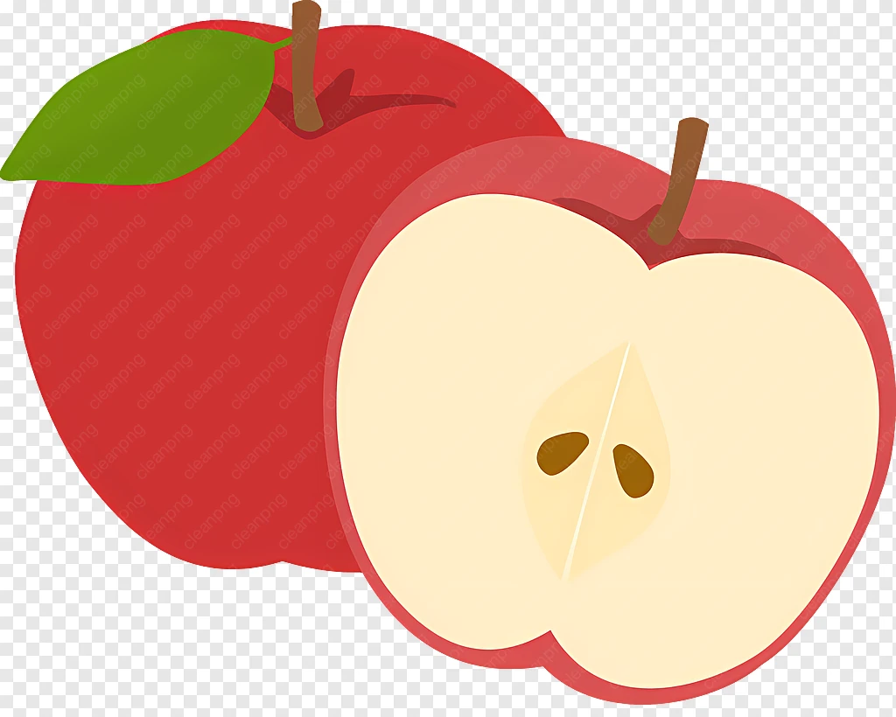
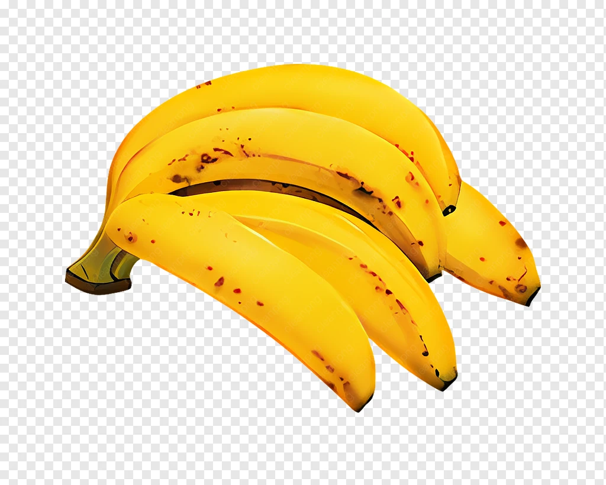
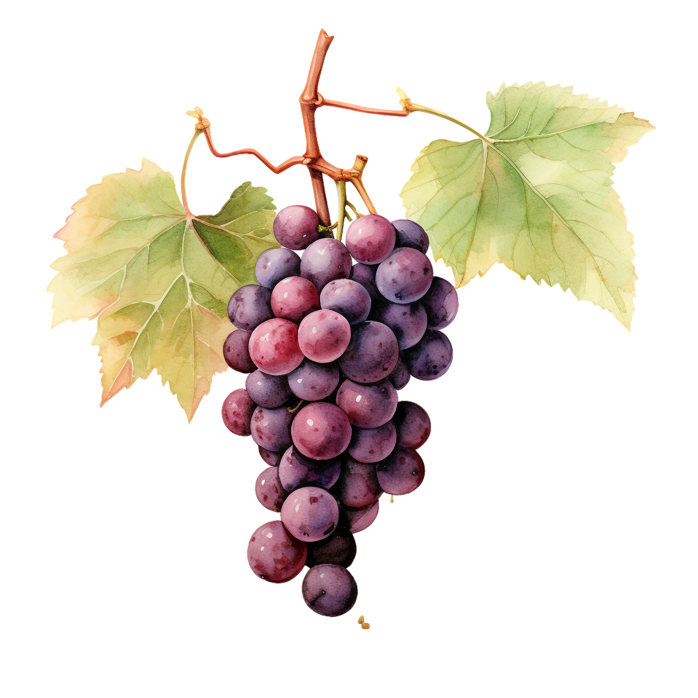
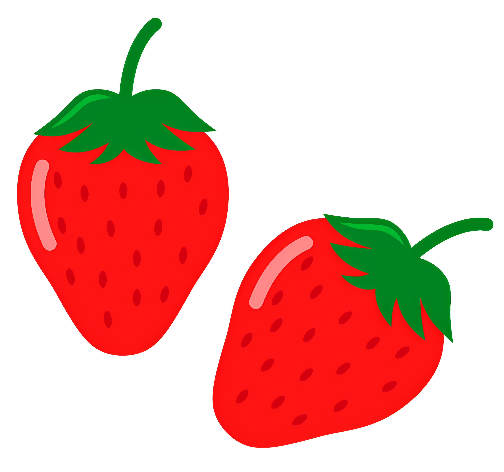
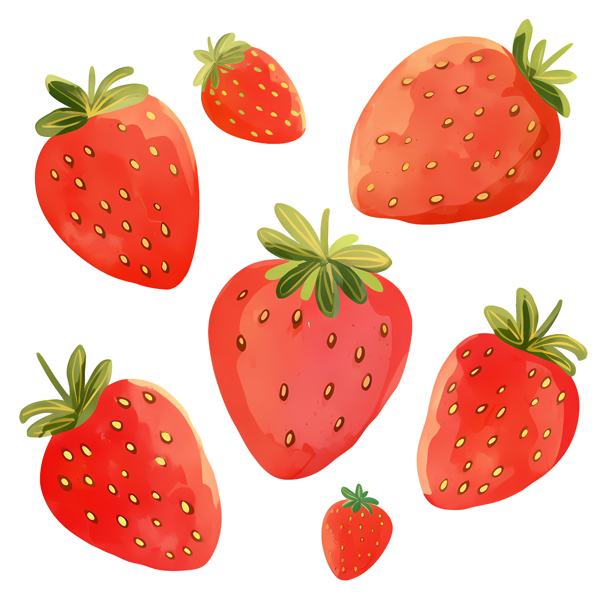

APPLES BLUEBERRIES STRAWBERRIES
Blueberries are a widely distributed and widespread group of perennial flowering plants with blue or purple berries. They are classified in the section Cyanococcus within the genus Vaccinium. Commercial blueberries both wild (lowbush) and cultivated (highbush)are all native to North America. The highbush varieties were introduced into Europe during the 1930s.
Blueberries are usually prostrate shrubs that can vary in size from 10 centimeters (4 inches) to 4 meters (13 feet) in height. In the commercial production of blueberries, the species with small, pea-size berries growing on low-level bushes are known as "lowbush blueberries" (synonymous with "wild"), while the species with larger berries growing on taller, cultivated bushes are known as "highbush blueberries". In 2024, Canada was the leading producer of lowbush blueberries, while the United States produced 29% of the world's supply of highbush blueberries.


